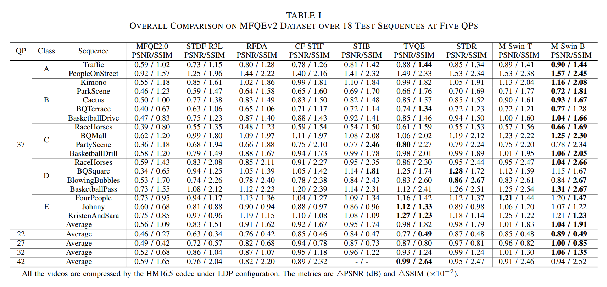

Multi-Swin Transformer based Spatio-Temporal Information Exploration for Compressed Video Quality Enhancement
2024, IEEE Signal Processing Letters（SPL）
Abstract
-
grade Spatio-temporal information plays an important role in compressed video quality enhancement. Most advanced studies use deformable convolution or Swin transformer to explore spatio-temporal information. However, deformable convolution based methods may incur inaccurate motion compensation due to the compression artifacts and limited receptive fields. The Swin transformer based approaches are unable to fully explore the spatio-temporal information, limited by its rigid window-based mechanism. To solve the above problems, we propose a novel multi-Swin transformer-based network for compressed video quality enhancement to better explore spatio-temporal information. The whole workflow consists of the Local Alignment (LA) Module, the Global Refinement Fusion (GRF) Module, and the Quality Enhancement (QE) Module. The LA module roughly perceives the local motion through the deformable fusion. Subsequently, the GRF module employs the proposed multi-Swin transformer to enhance the spatio-temporal perception. Finally, the QE module effectively restores the texture details across various scales. Extensive experimental results prove the effectiveness of the proposed method.
Highlights
-
grade We design a novel multi-Swin transformer that effectively identifies corresponding instance information from neighboring frames for spatio-temporal information exploration.
-
grade We propose the MSFS block which can exploit multi-scale spatial information.
-
grade Extensive experiments verify that our network achieves superior performance.
Network Architecture

grade The target frame along with its six adjacent frames are sequentially input to enable the LA module and the GRF module to learn the spatio-temporal feature residuals. Subsequently, the QE module learns the residuals specific to the target frame, which are then added back to enhance the quality of the target frame. The GRF module comprises N AMST blocks. The AMST block undergoes convolution, and includes four transformers with varying window shifts to calculate the adaptive residuals. The QE module contains M MSFS blocks. The MSFS block handles three types of features at different expansion rates, employing pooling and convolution to selectively enhance useful channels within each feature.
Results

Please check our paper for detail results.
Citation
@ARTICLE{10599772, author={Yu, Li and Wu, Shiyu and Gabbouj, Moncef}, journal={IEEE Signal Processing Letters}, title={Multi-Swin Transformer Based Spatio-Temporal Information Exploration for Compressed Video Quality Enhancement}, year={2024}, volume={31}, number={}, pages={1880-1884}, keywords={Transformers;Convolution;Video recording;Quality assessment;Motion compensation;Feature extraction;Correlation;Compressed video quality enhancement;spatio-temporal information;swin transformer}, doi={10.1109/LSP.2024.3429008}}